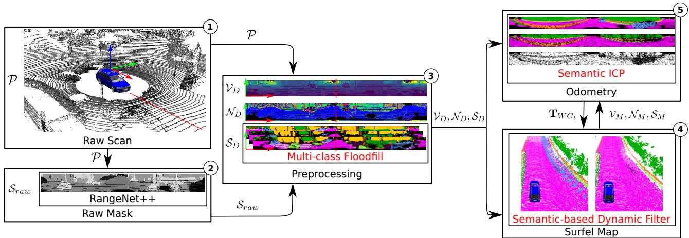
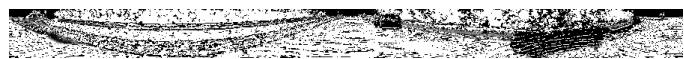

正文第三节首句写：「The foundation of our semantic SLAM approach is our Surfel-based Mapping (SuMa) [2] pipeline, which we extend」——大意是：本文方法的基础是 SuMa [2] 那条面片建图流水线，我们在它之上做了扩展。摘要在引言里也反复称自己是对一篇新近发表的、基于面片的建图方法的「extension（扩展）」。
所以本篇不是「另起炉灶」，而是一次叠加升级。它的目标场景也很具体：车辆密集的道路场景。原文说得很直白——现实环境里到处都是车和人，纯几何的 SLAM 假设世界是静止的，一遇到持续移动的车队就失效。而 SuMa++ 想做到的，不是「把会动的东西全删掉」，而是「想办法只在它真的在动的时候不信它」。

原图注（Fig. 2）：Pipeline overview of our proposed approach. We integrate semantic predictions into the SuMa pipeline in a compact way: (1) The input is only the LiDAR scan P. (2) Before processing the raw point clouds, we first use a semantic segmentation from RangeNet++ to predict the semantic label for each point and generate a raw semantic mask. (3) Given the raw mask, we generate a refined semantic map in the preprocessing module using multi-class flood-fill. (4) During the map updating process, we add a dynamic detection and removal module which checks the semantic consistency between the new observation and the world model and remove the outliers. (5) Meanwhile, we add extra semantic constraints into the ICP process to make it more robust to outliers.
（中译：所提方法的总览流水线。我们把语义预测紧凑地集成进 SuMa 流水线：(1) 输入只有激光扫描；(2) 在处理原始点云之前，先用 RangeNet++ 做语义分割，为每个点预测语义标签，生成一张原始语义掩码；(3) 有了原始掩码，在预处理模块中用多类 flood-fill 生成精修后的语义图；(4) 在地图更新过程中，加入动态检测与移除模块，检查新观测与世界模型之间的语义一致性并移除离群点；(5) 与此同时，在 ICP 过程中加入额外的语义约束，使其对离群点更鲁棒。） 怎么看这张图：这是本篇的主图，请按编号 (1)→(5) 依次看。① 注意 (1) 那一步：输入只有 LiDAR——整个系统不用相机，语义是「从激光数据里推出来的」，这一点是本篇最大的卖点之一；② (2)→(3) 是「语义从哪来、怎么修干净」，对应本课第 3 节；③ (4) 是「怎么剔掉动态物体」，对应第 4 节；④ (5) 是「语义怎么反过来帮配准」，也就是 Semantic ICP，同样在第 4 节。 要记住的一句话：整条链路上，语义标签只在两个地方发挥作用——建图时剔掉不可信的观测，配准时压低不可信的对应。除此之外，几何该怎么做还是怎么做。
请注意最后一行：语义标签是「加到已有面片上的一个新字段」，不是另建一套地图。原文的说法是「we add for each surfel the inferred semantic label $y$ and the corresponding probability of that label」——给每个面片附上推断出的语义标签和对应的概率。这也解释了为什么这篇论文叫 SuMa「++」：它是一次字段级的扩建。
原图注（Fig. 1）：Semantic map of the KITTI dataset generated with our approach using only LiDAR scans. The map is represented by surfels that have a class label indicated by the respective color. Overall, our semantic SLAM pipeline is able to provide high-quality semantic maps with higher metric accuracy than its non-semantic counterpart.
（中译：用我们的方法在 KITTI 数据集上生成的语义地图，只使用激光扫描。地图由面片表示，每个面片带有一个类别标签，用相应颜色标出。总体上，我们的语义 SLAM 流水线能够提供高质量的语义地图，其度量精度也高于不含语义的对照版本。） 怎么看这张图：这是「面片地图真实长什么样」的标准图。① 先注意颜色不是激光反射强度，而是语义类别——同一种颜色的片，属于同一类物体（路、车、建筑……）；② 再注意它不是一片散点，而是一片片贴上去的小面，这就是面片地图和点云地图最直观的区别；③ 最后请回到图注里那句 using only LiDAR scans——整张图没有用任何相机数据，语义是纯从激光推出的。 要记住的一句话：地图表示从「点」升级到「面片」，再给面片贴上标签——这二十来个字，就是 SuMa 到 SuMa++ 的全部跨度。
原图注（Fig. 3）：Visualization of the processing steps of the proposed floodfill algorithm. Given the (a) raw semantic map, we first use an erosion to remove boundary labels and small areas of wrong labels resulting in (b) the eroded mask. (c) We then finally fill-in eroded labels with neighboring labels to get a more consistent result. Black points represent empty pixels with label 0. (d) Shows the depth and (e) the details inside the areas with the dashed borders.
（中译：所提 flood-fill 算法的处理步骤可视化。给定 (a) 原始语义图，我们先用腐蚀操作去掉边界标签与小片错误标签，得到 (b) 腐蚀后的掩码。(c) 随后用邻居标签填补被腐蚀掉的标签，得到更一致的结果。黑色点表示标签为 0 的空像素。(d) 显示深度，(e) 显示虚线框内的细节。） 怎么看这张图：这是本课第 3 节「第 ③ 步」的过程图，按 (a)→(b)→(c) 的顺序看。① (a) 是网络直接吐出的原始语义图：注意里面那些成块的颜色和边界上的毛刺，那就是下采样造成的伪影；② (b) 是腐蚀之后：所有边界上的像素都被擦成黑色（原文特意说明黑色 = 标签 0 的空像素），你会看到颜色块之间出现了明显的黑边；③ (c) 是填充之后：黑边被邻居的标签补回去了，色块之间变得干净利落；④ (d)、(e) 是辅助信息——(d) 是配套的深度图，(e) 是虚线框内的放大细节。 要记住的一句话：网络给出的是「一团一团」的答案，直接投回三维就会在边界上出错。「先擦掉可疑的，再用同类且深度一致的邻居填回来」——这两步之后，语义图才算能用。
4. ★ 用语义剔掉会动的东西
前面都是铺垫，这一节才是本篇的核心目的：怎么把「会动的东西」从地图和配准里剔掉或降权。
先说清楚这个问题的严重性。原文说：绝大多数现有 SLAM 系统都假设环境基本是静止的，用几何信息来做观测与地图的关联。但现实世界是动的——尤其在驾驶场景里。运动的物体会造成观测与地图之间的错误关联，进而拖歪位姿估计、污染地图。原文举了一个非常具体的现象：车流持续朝一个方向移动时，帧到模型的 ICP 会「锁死」在这些移动的车上，于是地图出现明显的不一致。
原图注（Fig. 4，b 子图）：Effect of the proposed filtering of dynamics. For all figures, we show the color of the corresponding label, but note that SuMa does not use the semantic information. (a) Surfels generated by SuMa; (b) our method; (c) remove all potentially moving objects.
（中译：所提动态滤波的效果。所有图中我们都用对应标签的颜色来着色，但请注意 SuMa 本身并不使用语义信息。(a) SuMa 生成的面片；(b) 我们的方法；(c) 直接移除所有可能移动的物体。） 怎么看这张图：这里展示的是 (b) 子图，也就是本文方法的结果（按原文子图顺序推断：(a) 是 SuMa、(b) 是本文、(c) 是无脑删）。要理解它，最好的办法是把三个子图并排对比：(a) 是纯几何的 SuMa，它不知道什么是车、什么是墙，于是移动车队的面片会在地图里留下重影；(c) 是无脑删掉所有可动类，地图确实干净了，但连停靠的车辆面片也一起没了；(b) 是本文的做法——既清掉了真正在动的那些，又保住了停靠车辆这类有价值的静止特征。（本课只取出 (b) 一张作为代表，另两张可在原论文中对照查看。） 要记住的一句话：这张图三格连起来看，就是本篇最重要的一个论点——真正难的不是「删掉会动的东西」，而是「别把没动的东西也删了」。

原图注（Fig. 5，c 子图）：Visualization of Semantic ICP: (a) semantic map $S_D$ for the current laser scan, (b) corresponding semantic map $S_M$ rendered from the model, (c) the weight map during the ICP. The darker the pixel, the lower is the weight of the corresponding pixel.
（中译：Semantic ICP 的可视化：(a) 当前激光扫描的语义图 $S_D$；(b) 由模型渲染出的对应语义图 $S_M$；(c) ICP 过程中的权重图。像素越暗，对应像素的权重越低。） 怎么看这张图：这里展示的是 (c) 权重图（按原文子图顺序推断：(a) 是当前观测的语义图、(b) 是模型渲染出的语义图、(c) 是权重图）。原文配套的例子是一条高速公路上的场景，扫描里有两辆移动的车：① (a) 里有这两辆车，(b) 里它们已经被动态滤波从地图中移除了；② 于是在 (c) 里，车所在的位置出现了明显发暗的区域——原文说「由于观测与地图的类别不一致，我们可以看到对应位置的低权重」；③ 而路面、护栏这些一致的部分则保持较亮，也就是正常参与配准。 要记住的一句话：这张图是式 6 里那个 $C_{\text{semantic}}$ 因子的可视化证据——语义不一致的对应关系，在配准里被自动压暗了。这就是「判定」之后的第二层「处理」。
SuMa++ 新增的字段是「语义标签 $y$ 及其对应的概率」——原文的说法是「we add for each surfel the inferred semantic label $y$ and the corresponding probability of that label from the semantic segmentation」。注意这是给已有面片加一个字段，不是另建一套地图。